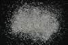

|
|
(For further information on spectroscopy, see:
http://speclab.cr.usgs.gov)
TITLE: Cordierite HS346 DESCRIPT
DOCUMENTATION_FORMAT: MINERAL
SAMPLE_ID: HS346
MINERAL_TYPE: Cyclosilicate
MINERAL: Cordierite
FORMULA: Mg2Al4Si5O18
FORMULA_HTML: Mg2Al4Si5O18
COLLECTION_LOCALITY: Guffy, Colorado
ORIGINAL_DONOR: Hunt and Salisbury Collection
CURRENT_SAMPLE_LOCATION: USGS Denver Spectroscopy Laboratory
ULTIMATE_SAMPLE_LOCATION: USGS Denver Spectroscopy Laboratory
SAMPLE_DESCRIPTION:
Forms series with Sekaninaite. Dimorphous with Indialite.
"C-2 Cordierite 346B--Guffy, Co . Al3(Mg, Fe2+)2 (Si5Al018): Cordierite is a mineral of metamorphic origin usually found in gneisses and crystalline schists, or in contact metamorphic zones. Its spectrum shows a weak Fe2+ feature at 0.95 µ, which is in accord with typical cordierite composition, and weak broad hydroxyl and water features at 1.4, 1.9, and 2.2 µ which are not. These latter bands are due to alteration products, principally muscovite. Reflectivities I through IV are 50%, 43%, 31%, and 12% at 1.0 µ."
Hunt, G.R., J.W. Salisbury, and C.J. Lenhoff, 1973, Visible and near-infrared spectra of minerals and rocks: VI. Additional silicates. Modern Geology, v. 4, p. 85-106.
IMAGE_OF_SAMPLE:

END_SAMPLE_DESCRIPTION.
XRD_ANALYSIS:
Cordierite + quartz + muscovite + talc (Norma Vergo)
END_XRD_ANALYSIS.
COMPOSITIONAL_ANALYSIS_TYPE: None # XRF, EM(WDS), ICP(Trace), WChem
COMPOSITION_TRACE: None
COMPOSITION_DISCUSSION:
END_COMPOSITION_DISCUSSION.
MICROSCOPIC_EXAMINATION:
mode:
52-62 vol% cordierite
30-40 vol% mica (clear)
8 vol% opaques as inclusions in cordierite
Because of significant mica contamination, I suggest this sample be deleted from database. G. Swayze.
END_MICROSCOPIC_EXAMINATION.
SPECTROSCOPIC_DISCUSSION:
END_SPECTROSCOPIC_DISCUSSION.
SPECTRAL_PURITY: 1d2d3d4d # 1= 0.2-3, 2= 1.5-6, 3= 6-25, 4= 20-150 microns
| LIB_SPECTRA_HED: | where | Wave Range | Av_Rs_Pwr | Comment |
|---|---|---|---|---|
| LIB_SPECTRA: | splib04a r 1260 | 0.2-3.0µm | 200 | g.s.= |
| LIB_SPECTRA: | splib05a r 2225 | 0.2-3.0µm | 200 | g.s.= |
| LIB_SPECTRA: | splib06a r 6353 | g.s.= | ||
| LIB_SPECTRA: | splib06a r 6365 | g.s.= |
{kind=link}